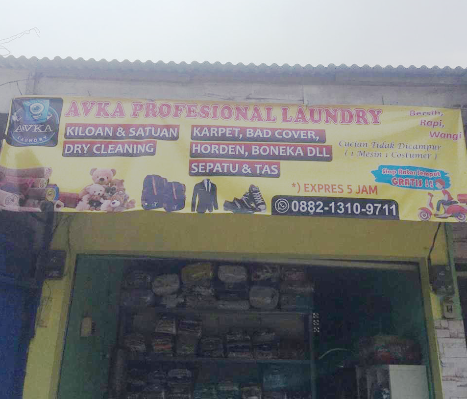

Sejarah Singkat Laundry Avka
Tangerang Selatan merupakan kota yang berpenduduk sangat padat dan masyarakatnya sangat dinamis, atau tepatnya di kelurahan Pondok Cabe Ilir karena mayoritas penduduk sudah berpola pikir modern. Begitu padatnya kegiatan mereka, sehingga mereka tidak mau menyianyiakan waktu dan energi untuk kegiatan mencuci. Dikarenakan pula kebanyakan keluarga pada sibuk bekerja jadi peluang inilah yang kemudian digunakan oleh pendiri AVKA LAUNDRY & DRY CLEANING untuk mencoba menawarkan/menjual jasa pencucian. Maka pada zxc vx x tanggal 23 februari 2015 secara resmi perusahaan MAMA LAUNDRY & DRY CLEANING memulai kegiatan operasionalnya.
